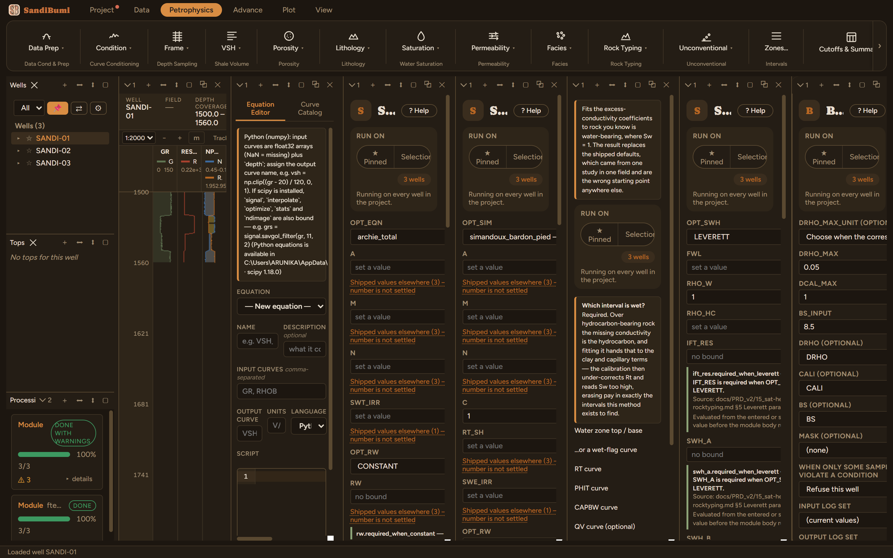

Flags samples where the borehole departs from gauge or the density correction is too large to trust the porosity logs. The flag is 1 in bad hole, 0 in good hole, and MISSING where no criterion could be evaluated; companion curves record which criterion fired and which were evaluable at all.
BADHOLE = 1 where |DRHO| > DRHO_MAX or |CALI − BS| > DCAL_MAX BS from the BS curve where present, else the interpreter's BS_INPUT; no value is substituted when both are absent
BADHOLE is the QC gate the rest of the interpretation masks on: 1 where the
borehole departs from gauge or the density correction is too large to trust the
porosity logs, 0 in good hole, MISSING where no criterion could be evaluated at
all. The companion curves are the part worth learning: the _EVALUATED
pair records which criteria were even checkable, and the cause flags record which
one fired.
DCAL_MAX 1 in (shipped) and BS_INPUT 8.5 in — this delivery has no BS curve, and its in-gauge caliper reads ~8.6 in, the standard 8½-in bit. No DRHO was delivered either, which sets up the honest half of this chapter.

On these wells: 3 clean, with 612 of 1185 samples flagged — the dataset's designed washout intervals, where CALI jumps ~2.5 in over bit. And the evaluated companions tell the full story: BADHOLE_DRHO_EVALUATED = 0 everywhere (no DRHO was delivered, so the density-correction criterion was never checked) while CALI_EVALUATED = 1. A reader of the flag alone would not know half the QC never ran; the companions exist so that fact is a curve, not a memory. Feed BADHOLE as the Mask on any later run.
Everything below is generated from the same manifest the application builds this module’s pane from — descriptions, defaults, sources, ranges and pre-run checks here are exactly what the running application enforces.
BADHOLE = 1 where the borehole departs from gauge or the density correction is large enough to distrust the porosity logs: |DRHO| > DRHO_MAX, or |CALI - bit size| > DCAL_MAX. Bit size comes from the BS curve where present, or the interpreter's optional BS_INPUT; no value is substituted when both are absent, so only DRHO can be evaluated. The flag is 0 in good hole and MISSING where no QC criterion can be evaluated. The two BADHOLE_*_EVALUATED companions record criterion availability with 1 = evaluated and 0 = unavailable; the BADHOLE_CALI / BADHOLE_DRHO_POS / BADHOLE_DRHO_NEG cause flags record which criterion fired, with the DRHO sign carried natively (DEC-060). Feed BADHOLE to any module run as a mask so flagged intervals go missing instead of polluting results.
| Role | Description | Resolves to | Required | Notes |
|---|---|---|---|---|
| DRHO | Density correction log | DRHO | no | — |
| CALI | Caliper log | CALI | no | — |
| BS | Bit size log | BS | no | — |
Whole-well defaults; per-zone values from the Zones pane take precedence inside their zones (except where a parameter is marked one-value-per-well).
Max acceptable density correction (starting value in g/cc)
Max acceptable absolute caliper departure from bit size
Optional explicit bit size when the BS curve is absent — blank means unavailable
Unit of the density-correction threshold; required when DRHO is present
g/cc — g/cckg/m3 — kg/m3| Name | Description |
|---|---|
| BADHOLE | Bad-hole flag (1 = bad, 0 = good) (flag: EXCLUSION_MASK) |
| BADHOLE_CALI | Caliper departure fired (DEC-060 bad-hole cause group; MISSING where the criterion was not evaluable) (flag: DIAGNOSTIC_INDICATOR) |
| BADHOLE_DRHO_POS | Density correction fired with positive sign (DEC-060 bad-hole cause group; MISSING where DRHO was not evaluable) (flag: DIAGNOSTIC_INDICATOR) |
| BADHOLE_DRHO_NEG | Density correction fired with negative sign (DEC-060 bad-hole cause group; MISSING where DRHO was not evaluable) (flag: DIAGNOSTIC_INDICATOR) |
| BADHOLE_CALI_EVALUATED | Caliper criterion availability (1 = evaluated, 0 = unavailable) (flag: DIAGNOSTIC_INDICATOR) |
| BADHOLE_DRHO_EVALUATED | Density-correction criterion availability (1 = evaluated, 0 = unavailable) (flag: DIAGNOSTIC_INDICATOR) |